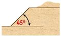

Vermessungsarbeiten auf Baustellen sind mit vielfältigen Gefährdungen verbunden, z. B.:
- Absturz
- herabfallende Gegenstände
- eingequetscht sowie angefahren und überfahren werden von mobilen Arbeitsmaschinen und anderen Fahrzeugen
- Lärm
- Stolpern, Rutschen, Stürzen
Vor Beginn der Arbeiten müssen die erforderlichen Schutzmaßnahmen mit der Baustellenleitung oder dem Koordinator beziehungsweise der Koordinatorin (SiGeKo) nach § 3 Baustellenverordnung abgestimmt werden. Dazu gehört auch die Einweisung in das Sicherheits- und Gesundheitsschutzkonzept für die Baustelle durch den oder die SiGeKo. Es sollten zudem Informationen über besondere Gefährdungen auf der jeweiligen Baustelle eingeholt werden. Die dort ausgehängten Sicherheitsregeln sind stets zu befolgen.
11.1 Baustellenverkehr
Vermessungsarbeiten auf Baustellen sind möglichst in Zeiten ohne Baubetrieb durchzuführen. Ist dies nicht möglich, muss zumindest im engeren Vermessungsbereich der Maschinenbetrieb und Baustellenverkehr eingestellt werden oder es sind Maßnahmen zu treffen, die die Sicherheit während der Vermessungsarbeiten gewährleisten, z. B. Trennung von Fahr- und Arbeitsbereich.
Während des Betriebs der Maschinen sind die maschinenführenden Personen auf ihre Arbeit konzentriert und zugleich bestehen vom Bedienstand der Maschine aus gesehen oft große tote Winkel. Der Zutritt in den Gefahrenbereich von Maschinen (Abbildung 18) ist nicht zulässig. Deshalb ist vor dem Vorbeigehen Sichtkontakt zum Maschinenführer oder zur Maschinenführerin aufzunehmen. Dieser oder diese muss die Arbeiten einstellen und signalisieren, dass gefahrlos vorbeigegangen werden kann. Besondere Vorsicht ist zudem bei rückwärtsfahrenden Baumaschinen geboten.

Abb. 18 Gefahrbereich beim Betrieb eines Baggers
11.2 Verkehrswege und Arbeitsplätze
Vermessungsarbeiten auf Baustellen sowie an und auf Bauwerken dürfen nur durchgeführt werden, wenn tragfähige und sicher begehbare Verkehrswege und Arbeitsplätze vorhanden sind. In begründeten Ausnahmefällen können für den Zugang Leitern verwendet werden, die gegen Umkippen und Wegrutschen gesichert sind.
Besteht an Arbeitsplätzen oder Verkehrswegen Absturzgefahr, so sind vom verantwortlichen Bauunternehmen Schutzvorrichtungen gegen Absturz anzubringen (z. B. Seitenschutzsysteme). Wenn technische Schutzlösungen gegen Absturzgefahren nicht umgesetzt werden können, müssen persönliche Schutzausrüstungen gegen Absturz verwendet werden. Bei der Verwendung von PSAgA muss auf sichere Anschlagpunkte geachtet werden (weitere Informationen siehe Kapitel 3.8 "PSA gegen Absturz").
Die Arbeitsstättenverordnung gibt in Verbindung mit der zugehörigen Technischen Regel ASR A2.1 wie auch die DGUV Vorschrift 38 "Bauarbeiten" verbindlich vor, wann Schutzvorrichtungen gegen Absturz auf Baustellen vorhanden sein müssen:
- unabhängig von der Absturzhöhe an
| –
| Arbeitsplätzen an und über Wasser oder anderen festen oder flüssigen Stoffen, in denen man versinken kann,
|
| –
| Verkehrswegen über Wasser oder anderen festen oder flüssigen Stoffen, in denen man versinken kann;
|
- bei mehr als 1,00 m Absturzhöhe, soweit nicht nach Nummer 1 zu sichern ist, an
| –
| freiliegenden Treppenläufen und -absätzen,
|
| –
| Wandöffnungen,
|
| –
| Verkehrswegen;
|
- bei mehr als 2,00 m Absturzhöhe an allen übrigen Arbeitsplätzen.
Auf Baustellen besteht zudem oftmals die Gefahr des Durchsturzes durch nicht tragfähige Bauteile, z. B. Wellplatten aus Faserzement oder Lichtkuppeln. Diese Bereiche müssen vor Aufnahme der Arbeiten gesichert sein, z. B. durch lastverteilende Beläge in Kombination mit Seitenschutz.
11.3 Persönliche Schutzausrüstungen auf Baustellen
Persönlichen Schutzausrüstungen kommen auf Baustellen eine besondere Bedeutung zu, da technische Schutzmaßnahmen oftmals nicht umzusetzen sind. Zu den üblichen PSA auf Baustellen gehören:
- Sicherheitsschuhe: empfehlenswert sind knöchelhohe Sicherheitsschuhe mit durchtrittsicherer Profilsohle (Kategorie S3)
- Schutzhelm
- Warnkleidung und Schutzkleidung gegen Witterungseinflüsse (idealerweise kombiniert)
- Gehörschutz
- Schutzbrillen
- Schutzhandschuhe
- Persönliche Schutzausrüstungen gegen Absturz
Mit der Leitung der Baustelle und dem Koordinator bzw. der Koordinatorin ist abzustimmen, welche PSA auf der Baustelle getragen werden muss. Weitergehende Informationen zur Auswahl und Verwendung von PSA sind im Kapitel 3 zu finden.
11.4 Sicherung von Baugruben und Gräben
Bei Vermessungsarbeiten in der Nähe von Baugruben- und Grabenwänden besteht insbesondere die Gefahr von Verschüttungen. Werden Wände von Baugruben oder Gräben nicht standsicher ausgeführt (z. B. Böschung zu steil, Ausführung ohne Verbau), können sich Erdmassen lösen und in die Baugrube oder den Graben fallen. An ungesicherten Rändern zu Baugruben und Gräben kann Absturzgefahr bestehen.
Vor der Aufnahme von Vermessungsarbeiten im Bereich von Baugruben oder Gräben muss der oder die Aufsichtführende mit dem Bauherrn, der Bauherrin oder der Bauleitung klären, ob die Baugruben- oder Grabenwände standsicher sind, ob Absturzgefahren bestehen und wo sich die Zugänge in die Baugrube befinden.
Falls keine ausreichende Sicherung besteht, muss die Bauherrin, der Bauherr oder die Bauleitung für diese Sicherung sorgen. Baugruben und Gräben, die nicht ausreichend gesichert sind, dürfen nicht begangen werden.
Die Wände von Baugruben und Gräben gelten dann als standsicher, wenn sie geböscht oder verbaut ausgeführt sind.
Gräben bis 1,25 m Tiefe dürfen mit senkrechten Wänden ausgeführt sein und erfordern keinen Verbau (die im § 5 der DGUV Vorschrift 38 "Bauarbeiten" genannten Rahmenbedingungen müssen beachtet werden). Am oberen Rand des Grabens ist zudem ein 0,60 m breiter Schutzstreifen freizuhalten (siehe Abbildung 19).
Bei der Sicherung durch Böschung hängen die zulässigen Böschungswinkel von der Art des Bodens ab (siehe Abbildung 20).
Bei der Sicherung durch Verbau werden für Gräben für Versorgungsleitungen in der Regel vorgefertigte Elemente (Grabenverbaugeräte, siehe Abbildung 21) verwendet. Baugruben hingegen können durch verschiedene Verfahren (z. B. Spundwände, Trägerbohlwände, Bohrpfähle oder Kombinationen daraus) verbaut werden.

Abb. 19 Maximale Tiefe ohne Verbau und Schutzstreifen
Max. 45° – in nicht bindigen oder weichen
bindigen Böden (z.B. Mutterboden, Sande,
Kiese, weicher Ton) |

|
Max. 60° – in mind. steifen bindigen Böden
(z.B. Lehm, Mergel) |

|
Max. 80° – in gesundem, festem Fels (z. B. Fels
ohne zur Baugrube hin einfallenden Schichten,
Klüfte, Verwitterung) |

|
Abb. 20 Zulässige Böschungswinkel

Abb. 21 Grabenverbaugeräte und Absturzsicherung
11.5 Absturzgefahr im Bereich von Baugruben und Gräben
An Böschungen mit mehr als 60° Neigung besteht Absturzgefahr. In diesen Fällen muss ab einer Absturzhöhe von mehr als 2,0 m eine Absturzsicherung vorhanden sein (siehe Abbildung 20). Muss auf der Böschung gearbeitet werden, sind ggf. weitere Maßnahmen nach ASR A2.1 zu ergreifen.
Rechtliche Grundlagen und weitere Informationen
|